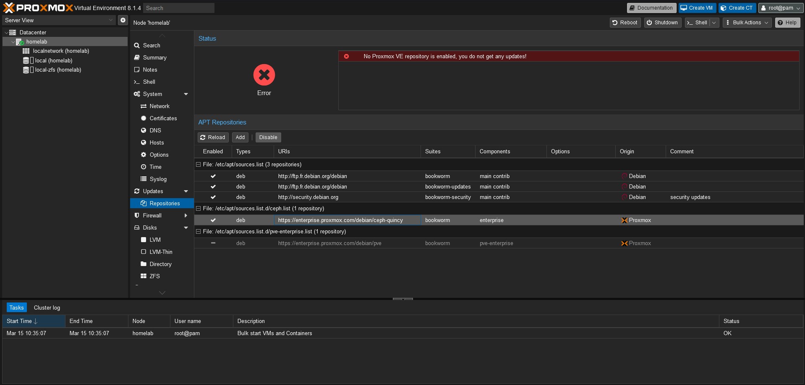

POST-INSTALLATION - Proxmox - Configuration#
Désactiver les dépôts pve-enterprise et ceph#
La première chose à faire dans la configuration de Proxmox, est de désactiver le dépôt PVE Entreprise et Ceph si on n'en a pas l'utilité.
On peut le faire de 2 façons différentes :
- Via l'interface graphique
- Ou en ligne de commande
Via l'interface graphique#
Se rendre sous homelab > Updates > Repositories :

Pour le dépot https://entreprise.proxmox.com/debian/pve :

{kind=link}

{kind=link}
Pour le dépot https://entreprise.proxmox.com/debian/ceph-quincy :
On réitère les étapes ci-dessus en prenant le soin de bien sélectionner le dépôt https://entreprise.proxmox.com/debian/ceph-quincy
En ligne de commande#
On se connect en SSH sur le serveur Proxmox ou via le Shell sur l'interface graphique. On va venir éditer ce fichier et commenter la ligne :
$ vi /etc/apt/sources.list.d/pve-enterprise.list
# deb https://enterprise.proxmox.com/debian/pve bookworm pve-enterprise
$ vi /etc/apt/sources.list.d/ceph.list
# deb https://enterprise.proxmox.com/debian/ceph-quincy bookworm enterprise
Activer le dépôt pve-no-subscription#

Désactiver le stockage par défaut local#

Via l'interface graphique#
On sélectionne la ligne correspondant au stockage que l'on veut désactiver, on clique sur Edit et on décoche Enable et on valide.
En ligne de commande#
Pour désactiver le stockage local sur /var/lib/vz :
Pour activer le stockage local sur /var/lib/vz :
Référence : https://pve.proxmox.com/wiki/Storage#_using_the_command_line_interface
Proxmox et LVM#
De l'utilisation du volume logique /dev/pve/data#
Le programme d'installation crée un groupe de volumes (VG) appelé pve et des volumes logiques (LV) supplémentaires appelés root, data et swap.
Pour contrôler la taille de ces volumes, Proxmox utilise les options suivantes :
hdsize : Définit la taille totale du disque dur à utiliser. De cette façon, vous pouvez réserver de l'espace libre sur le disque dur pour un partitionnement ultérieur (par exemple pour un PV et un VG supplémentaires sur le même disque dur pouvant être utilisés pour le stockage LVM).
swapsize : Définit la taille du volume de swap. La valeur par défaut est la taille de la mémoire installée, minimum 4 Go et maximum 8 Go. La valeur résultante ne peut pas être supérieure à hdsize/8.
Remarque : Si la valeur est 0, aucun volume d'échange ne sera créé.
maxroot : Définit la taille maximale du volume racine, qui stocke le système d'exploitation. La limite maximale de la taille du volume racine est hdsize/4.
maxvz : Définit la taille maximale du volume de données. La taille réelle du volume de données est : datasize = hdsize - rootsize - swapsize - minfree
Où la taille des données ne peut pas être supérieure à maxvz.
Note
Remarque : En cas de LVM Thin, le pool de données ne sera créé que si la taille des données est supérieure à 4 Go.
Remarque : Si la valeur est 0, aucun volume de données ne sera créé et la configuration du stockage sera adaptée en conséquence.
minfree :
Définit la quantité d'espace libre restant dans le groupe de volumes LVM pve.
Avec plus de 128 Go de stockage disponible, la valeur par défaut est 16 Go, sinon hdsize/8 sera utilisé.
Remarque : LVM nécessite de l'espace libre dans le VG pour la création d'instantanés (non requis pour les instantanés lvmthin).
Note
Avec cette configuration, on n'a pas totalement la main sur la taille des volumes logiques créés. La suite de cette documentation détaille comment supprimer le volume logique /dev/pve/data et de récupérer l'espace disque supplémentaire pour agrandir le volume logique /dev/pve/root.
Noter qur nous utiliserons un disque dur complémentaire afin de recréer un volume logique /dev/pve/data.
Avertissement
Ces opérations doivent être réalisées sur une installation initiale et avec précaution. À ne pas faire sur une installation de Proxmox en production.
Suppression du volume logique data et extension du volume logique root avec l'espace disque libéré#
Désactivation du volume logique /dev/pve/data et suppression du volume logique :
Agrandir le volume logique /dev/pve/root avec l'espace disque libéré par la suppression du volume logique /dev/pve/data
Il faut maintenant penser à agrandir le système de fichier du volume logique /dev/pve/root.
Vérification du système de fichier utilisé sur /dev/pve/root :
lsblk -o NAME,TYPE,MOUNTPOINT,FSTYPE,FSSIZE,SIZE,FSAVAIL
NAME TYPE MOUNTPOINT FSTYPE FSSIZE SIZE FSAVAIL
sda disk 60G
├─sda1 part 1007K
├─sda2 part vfat 512M
└─sda3 part LVM2_member 59.5G
├─pve-swap lvm [SWAP] swap 8G
└─pve-root lvm / ext4 24.3G 51.5G 19.4G
sdb disk 128G
Le système de fichier /dev/pve/root est en ext4. On réalise l'agrandissement à chaud sans démonter le volume :
lsblk -o NAME,TYPE,MOUNTPOINT,FSTYPE,FSSIZE,SIZE,FSAVAIL
NAME TYPE MOUNTPOINT FSTYPE FSSIZE SIZE FSAVAIL
sda disk 60G
├─sda1 part 1007K
├─sda2 part vfat 512M
└─sda3 part LVM2_member 59.5G
├─pve-swap lvm [SWAP] swap 8G
└─pve-root lvm / ext4 50.5G 51.5G 44.6G
sdb disk 128G
Création du volume logique /dev/pve/data sur un disque dur prévu à cet effet /dev/sdb#
Etat des lieux LVM:
pvdisplay
--- Physical volume ---
PV Name /dev/sda3
VG Name pve
PV Size <63.50 GiB / not usable 2.98 MiB
Allocatable yes (but full)
PE Size 4.00 MiB
Total PE 16255
Free PE 0
Allocated PE 16255
PV UUID QCTN2f-GNZR-TWsG-q8IR-3Jr0-ztd2-6fQjJ6
vgdisplay
--- Volume group ---
VG Name pve
System ID
Format lvm2
Metadata Areas 1
Metadata Sequence No 9
VG Access read/write
VG Status resizable
MAX LV 0
Cur LV 2
Open LV 2
Max PV 0
Cur PV 1
Act PV 1
VG Size <63.50 GiB
PE Size 4.00 MiB
Total PE 16255
Alloc PE / Size 16255 / <63.50 GiB
Free PE / Size 0 / 0
VG UUID nQPS3U-LCV8-1K91-gM7K-j0W6-3aEx-92QrCt
lvdisplay
--- Logical volume ---
LV Path /dev/pve/swap
LV Name swap
VG Name pve
LV UUID bKPvlf-nqi2-jiNH-X4Fe-pkbO-P3Oo-Smto3f
LV Write Access read/write
LV Creation host, time proxmox, 2024-12-18 14:35:01 +0100
LV Status available
# open 2
LV Size 8.00 GiB
Current LE 2048
Segments 1
Allocation inherit
Read ahead sectors auto
- currently set to 256
Block device 252:0
--- Logical volume ---
LV Path /dev/pve/root
LV Name root
VG Name pve
LV UUID CnnWlY-8tSq-H8Ec-eQVw-m8FM-lNU7-VIzr0J
LV Write Access read/write
LV Creation host, time proxmox, 2024-12-18 14:35:01 +0100
LV Status available
# open 1
LV Size <55.50 GiB
Current LE 14207
Segments 1
Allocation inherit
Read ahead sectors auto
- currently set to 256
Block device 252:1
Agrandissement du groupe de volume pve avec la partition /dev/sdb1 du disque dur /dev/sdb :
lsblk -o NAME,TYPE,MOUNTPOINT,FSTYPE,FSSIZE,SIZE,FSAVAIL
NAME TYPE MOUNTPOINT FSTYPE FSSIZE SIZE FSAVAIL
sda disk 64G
├─sda1 part 1007K
├─sda2 part vfat 512M
└─sda3 part LVM2_member 63.5G
├─pve-swap lvm [SWAP] swap 8G
└─pve-root lvm / ext4 54.4G 55.5G 48.2G
sdb disk 128G
└─sdb1 part 128G
vgextend pve /dev/sdb1
Physical volume "/dev/sdb1" successfully created.
Volume group "pve" successfully extended
vgdisplay
--- Volume group ---
VG Name pve
System ID
Format lvm2
Metadata Areas 2
Metadata Sequence No 10
VG Access read/write
VG Status resizable
MAX LV 0
Cur LV 2
Open LV 2
Max PV 0
Cur PV 2
Act PV 2
VG Size 191.49 GiB
PE Size 4.00 MiB
Total PE 49022
Alloc PE / Size 16255 / <63.50 GiB
Free PE / Size 32767 / <128.00 GiB
VG UUID nQPS3U-LCV8-1K91-gM7K-j0W6-3aEx-92QrCt
Création du volume logique /dev/pve/data de type thin-pool :
lvcreate -l 100%FREE --thin --name data pve
Thin pool volume with chunk size 64.00 KiB can address at most <15.88 TiB of data.
Logical volume "data" created.
lvs
LV VG Attr LSize Pool Origin Data% Meta% Move Log Cpy%Sync Convert
data pve twi-a-tz-- <127.75g 0.00 10.42
root pve -wi-ao---- <55.50g
swap pve -wi-ao---- 8.00g
Ajout du stockage de type LVM thin-pool dans Proxmox :
# add the storage in to Proxmox CV as an LVM Thin type named "local-lvm"
pvesm add lvmthin local-lvm -vgname pve -thinpool data
Stocker les images iso des VMS/CTs#
Afin de ne pas surcharger les espaces de stockage de Proxmox, j'ai opté pour la mise en place d'un stockage sur clé USB pour stocker les images ISOs des VMs ou encore mes templates de les containers LXC.
A cette fin, il faut brancher uné clé USB sur la machine. Moi, j'ai opté pour uné clé USB 3.2 SanDisk Ultra Fit de 128GO que j'ai branché au cul de mon serveur. Ce ne sont pas des données très sensibles, si ma clé venait à rendre l'âme, ce sont des données facilement remplaçables.
Procédure :
- Branchez la clé USB sur le serveur,
-
Sur le serveur Proxmox, lancez la commande pour détécter/identifier le matériel fraîchement ajouté :
root@homelab:~# fdisk -l Disk /dev/sda: 1 TiB, 1099511627776 bytes, 2147483648 sectors Disk model: VBOX HARDDISK Units: sectors of 1 * 512 = 512 bytes Sector size (logical/physical): 512 bytes / 512 bytes I/O size (minimum/optimal): 512 bytes / 512 bytes Disklabel type: gpt Disk identifier: 30CEC8C0-5E64-4538-BCB6-14419B0A845D Device Start End Sectors Size Type /dev/sda1 34 2047 2014 1007K BIOS boot /dev/sda2 2048 2099199 2097152 1G EFI System /dev/sda3 2099200 2147483614 2145384415 1023G Solaris /usr & Apple ZFS Disk /dev/sdb: 1 TiB, 1099511627776 bytes, 2147483648 sectors Disk model: VBOX HARDDISK Units: sectors of 1 * 512 = 512 bytes Sector size (logical/physical): 512 bytes / 512 bytes I/O size (minimum/optimal): 512 bytes / 512 bytes Disklabel type: gpt Disk identifier: 1938A24D-F234-4DAE-958D-964B26179408 Device Start End Sectors Size Type /dev/sdb1 34 2047 2014 1007K BIOS boot /dev/sdb2 2048 2099199 2097152 1G EFI System /dev/sdb3 2099200 2147483614 2145384415 1023G Solaris /usr & Apple ZFS Disk /dev/sdc: 128 GiB, 137438953472 bytes, 268435456 sectors Disk model: VBOX HARDDISK Units: sectors of 1 * 512 = 512 bytes Sector size (logical/physical): 512 bytes / 512 bytes I/O size (minimum/optimal): 512 bytes / 512 bytes -
On remarque que notre clé est identifiée sur
/dev/sdc. On va donc formater la clé et la monter. - Créer une table de partition GPT avec sgdisk :
Note
Lorsqu'il est invoqué avec l'option -o (ou --clear), sgdisk efface toute table de partition existante sur le périphérique donné et crée une nouvelle table de partition GPT. Encore une fois, puisque le programme est destiné à être utilisé à partir de scripts, aucun avertissement ne sera émis et aucune confirmation ne sera demandée, il doit donc être utilisé avec précaution.
-
Formatage de la clé :
root@homelab:~# mkfs.ext4 /dev/sdc mke2fs 1.47.0 (5-Feb-2023) Found a gpt partition table in /dev/sdc Proceed anyway? (y,N) y Creating filesystem with 33554432 4k blocks and 8388608 inodes Filesystem UUID: 01418e86-d606-4d40-acf4-79af5045172c Superblock backups stored on blocks: 32768, 98304, 163840, 229376, 294912, 819200, 884736, 1605632, 2654208, 4096000, 7962624, 11239424, 20480000, 23887872 Allocating group tables: done Writing inode tables: done Creating journal (262144 blocks): done Writing superblocks and filesystem accounting information: done -
Créé un point de montage et monter la clé :
On retrouve bien notre clé USB montée surroot@homelab:~# mkdir /mnt/iso root@homelab:~# mount /dev/sdc /mnt/iso root@homelab:~# df -h Filesystem Size Used Avail Use% Mounted on udev 3.9G 0 3.9G 0% /dev tmpfs 794M 792K 793M 1% /run rpool/ROOT/pve-1 985G 1.7G 983G 1% / tmpfs 3.9G 43M 3.9G 2% /dev/shm tmpfs 5.0M 0 5.0M 0% /run/lock rpool 983G 128K 983G 1% /rpool rpool/var-lib-vz 983G 128K 983G 1% /var/lib/vz rpool/ROOT 983G 128K 983G 1% /rpool/ROOT rpool/data 983G 128K 983G 1% /rpool/data /dev/fuse 128M 16K 128M 1% /etc/pve tmpfs 794M 0 794M 0% /run/user/0 /dev/sdc 125G 28K 119G 1% /mnt/iso/mnt/iso. À ce stade, le point de montage est éphémère. Si jamais la machine redémarre, la clé USB ne sera pas remontée automatquement sur/mnt/iso. Pour cela, il faut éditer le fichier/etc/fstab. -
Rendre persistent le montage via
/etc/fstabet l'D du disque :root@homelab:~# ls -al /dev/disk/by-id/ total 0 drwxr-xr-x 2 root root 220 Mar 15 15:22 . drwxr-xr-x 8 root root 160 Mar 15 14:54 .. lrwxrwxrwx 1 root root 9 Mar 15 14:54 ata-VBOX_HARDDISK_VB4d776a0a-b24c3eb0 -> ../../sda lrwxrwxrwx 1 root root 10 Mar 15 14:54 ata-VBOX_HARDDISK_VB4d776a0a-b24c3eb0-part1 -> ../../sda1 lrwxrwxrwx 1 root root 10 Mar 15 14:54 ata-VBOX_HARDDISK_VB4d776a0a-b24c3eb0-part2 -> ../../sda2 lrwxrwxrwx 1 root root 10 Mar 15 14:54 ata-VBOX_HARDDISK_VB4d776a0a-b24c3eb0-part3 -> ../../sda3 lrwxrwxrwx 1 root root 9 Mar 15 14:54 ata-VBOX_HARDDISK_VB4fd111ed-7ccb2978 -> ../../sdb lrwxrwxrwx 1 root root 10 Mar 15 14:54 ata-VBOX_HARDDISK_VB4fd111ed-7ccb2978-part1 -> ../../sdb1 lrwxrwxrwx 1 root root 10 Mar 15 14:54 ata-VBOX_HARDDISK_VB4fd111ed-7ccb2978-part2 -> ../../sdb2 lrwxrwxrwx 1 root root 10 Mar 15 14:54 ata-VBOX_HARDDISK_VB4fd111ed-7ccb2978-part3 -> ../../sdb3 lrwxrwxrwx 1 root root 9 Mar 15 15:22 ata-VBOX_HARDDISK_VBb598f427-91b62771 -> ../../sdc -
On redémarre pour vérifier que la configuration est bien effective !
-
Si la clé est bien montée au redémarrage, on peut passer à la configuration du stockage sur Proxmox :